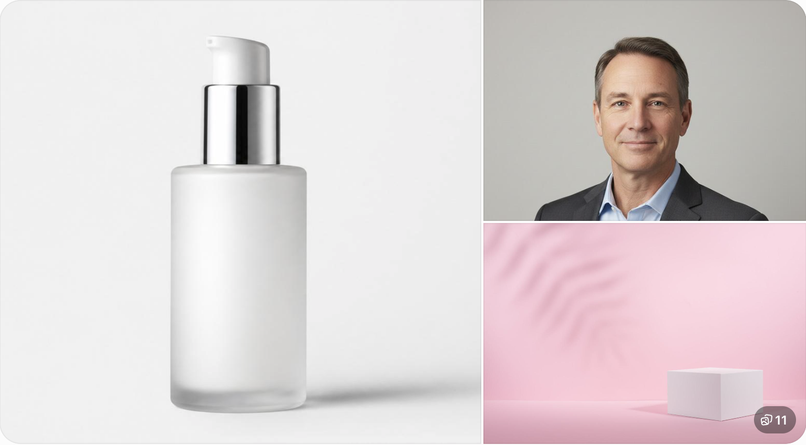

Have you ever changed the background color of a photo, only to find that the final image looks worse than the original?
Maybe the background is now white, but the product looks like it was cut out and pasted onto a blank page. Perhaps the edges around a person's hair look rough, the product has an unwanted colored outline, or the new background makes the subject appear unnatural.
These problems are more common than many people realize.
Changing an image background is not simply about choosing a new color. The final result also depends on the original lighting, subject edges, shadows, contrast, image quality, and the purpose of the photograph.
This matters especially when preparing product photos for an online store, creating social media graphics, updating a professional profile picture, or designing promotional images.
A background that looks attractive in an editing preview may not work well on a website or marketplace. A product can become difficult to see, colors may look inaccurate, and an inconsistent image style can make an entire product catalogue appear unprofessional.
The good news is that most of these issues can be avoided with a few practical adjustments.
In this guide, you will learn why background color changes sometimes look unnatural, which colors work best for different images, how to improve the final result, and how to change an image background color online using QuickToolsPK.
1. Why Does Your Image Background Look Unprofessional After Editing?
A background color change can improve a photograph, but it cannot automatically correct every problem in the original image.
Here are some common reasons the final result may look disappointing.
1.1 The subject looks like it was pasted onto the background
This is one of the most noticeable problems.
Imagine a product photographed in a bedroom with natural window lighting. You replace the original background with pure white, but the product still has dark shadows and warm reflections from the original environment.
The result can look disconnected because the lighting on the subject does not match the new background.
How to improve it:
- Start with a photograph that has even lighting.
- Avoid strong shadows behind the subject.
- Choose a background color that complements the subject.
- Check whether the original lighting creates unwanted color reflections.
- Avoid adding dramatic shadows unless they match the photograph.
A simple background often looks more professional than an elaborate one.
1.2 The edges around the subject look rough
Hair, fur, transparent objects, thin wires, and detailed product edges can be difficult to separate from an original background.
For example, a portrait taken against a wall with a similar color to the person's hair may have unclear boundaries. A product with transparent glass can be even harder to distinguish from its surroundings.
When the subject and background are visually similar, the separation process becomes more difficult.
How to improve it:
- Use photographs with clear contrast between the subject and background.
- Avoid busy backgrounds when taking product photographs.
- Inspect the edges around hair, shoulders, and small details.
- Look for leftover outlines from the original background.
- Retake the photograph if important details are missing.
Do not judge an edited image only by looking at its thumbnail. Zoom in and inspect the edges before using it.
1.3 White backgrounds look grey instead of pure white
A white background is popular for product photography because it creates a clean and simple appearance.
However, there is a difference between a background that looks white on your screen and one that actually uses pure white.
A slightly grey or cream-colored background may be suitable for a brand design, but it might not meet a marketplace's exact requirements.
For example, Amazon's main product image guidance specifies a pure white background with RGB values of 255, 255, 255. Always check the current requirements for your product category.
How to improve it:
- Use a pure white value when the destination requires it.
- Check the background at full image size.
- Avoid accidental grey borders or colored areas.
- Make sure the product itself remains visible against white.
1.4 The new background makes the product difficult to see
Choosing a background color that matches the subject can reduce contrast.
For example:
- A white shirt on a very light grey background may lose its outline.
- A black handbag on a dark navy background may become difficult to distinguish.
- A beige product on a cream background may look flat.
How to improve it:
Choose a background that creates enough contrast without distracting from the product.
The purpose of the background is to support the subject, not compete with it.
1.5 The product's original colors no longer look accurate
This is particularly important for ecommerce businesses.
Customers expect product photographs to represent the actual item. A background that adds strong color reflections or makes the product appear different can create misleading images.
For example, a warm orange background can make a white product appear yellowish, especially when the photograph already contains warm lighting.
How to improve it:
- Keep the original product colors recognizable.
- Avoid overly saturated background colors.
- Compare the edited result with the original photograph.
- Use neutral colors when accurate product presentation matters.
- Do not recolor the actual product simply to match the background.
2. Which Background Color Should You Choose?
The best background color depends on what the image will be used for.
There is no single color that works for every photograph.
| Background color | Best use | Important consideration |
|---|---|---|
| White | Product listings, catalogues, clean layouts | Check if pure white is required |
| Light grey | Professional portraits, business graphics | Maintain enough contrast |
| Black | Luxury products, dramatic promotions | Dark products may disappear |
| Pastel pink | Beauty, fashion, lifestyle graphics | Avoid reducing product visibility |
| Light blue | Corporate and professional designs | Keep the tone subtle |
| Brand color | Social posts, promotional graphics | Use consistent brand values |
2.1 White background for product photos
White is one of the most useful choices for ecommerce photography.
It works particularly well for:
- Electronics
- Skincare products
- Household accessories
- Fashion accessories
- Small home products
- Catalogue photography
A white background helps keep attention on the item.
However, white products need careful lighting and contrast. A white product against a white background can lose its edges if there is no separation.
2.2 Light grey for professional profile pictures
Light grey can be a useful option for:
- LinkedIn profile photographs
- Team member portraits
- Company websites
- Corporate presentations
- Professional biographies
It gives the photograph a neutral appearance without being as bright as pure white.
2.3 Black backgrounds for premium products
Black can work well for watches, jewellery, accessories, and selected promotional designs.
It creates a strong visual contrast with bright products.
However, black is not automatically the best choice for every luxury product. Dark objects can disappear into the background if the lighting is not suitable.
2.4 Brand colors for social media graphics
Businesses often use brand colors to create consistent promotional designs.
For example, a business might use the same background shade across:
- Instagram product posts
- Facebook promotional graphics
- Website banners
- Digital advertisements
- Presentation slides
Using the exact HEX value helps maintain consistency between designs.
3. What Is a HEX Color Code and Why Does It Matter?
A HEX color code is a six-character code used to identify a specific color in digital designs.
It normally begins with a hash symbol.
Examples:
| Color | HEX code | Common use |
|---|---|---|
| White | #FFFFFF | Clean product backgrounds |
| Black | #000000 | High contrast |
| Light grey | #F2F2F2 | Corporate designs |
| Navy blue | #142B4A | Professional branding |
| Soft pink | #F4DDE3 | Beauty and fashion |
| Light blue | #DCEBFA | Calm, professional graphics |
Why does this matter?
Suppose you manage an online store and want every product photograph to use the same background shade.
Choosing a color visually each time can create small differences between images.
Using one HEX value makes it easier to reproduce the same background color across multiple designs.
Practical tip: Keep a small brand color reference file containing your primary, secondary, and background HEX values. This saves time when preparing future images.
4. How to Change an Image Background Color Online
You do not always need expensive desktop editing software to prepare a simple image for a website or promotional design.
You can use an online background color tool to work with supported image formats and choose a suitable color.
Step 1: Open the background color tool
Visit the QuickToolsPK Change Image Background Color tool.
The tool accepts:
- JPG
- PNG
- WEBP
The listed maximum file size is 20 MB.
Step 2: Upload your image
Select the photograph or graphic you want to edit.
For better results, start with a clear image where the main subject is easy to distinguish from the background.
Step 3: Choose a background color
Use the available color controls to select the desired shade.
You can use the color picker or enter a custom HEX value when you want a specific brand color.
For example:
#FFFFFFfor white#000000for black#F2F2F2for light grey#DCEBFAfor light blue
Choose a shade that works with the subject and the intended use of the image.
Step 4: Preview the edited image
Before downloading, carefully inspect the result.
Check:
- Whether the subject remains visible.
- Whether the background color looks consistent.
- Whether the subject's edges look natural.
- Whether any unwanted areas have changed.
- Whether the final image looks suitable for its destination.
If the result does not look right, reconsider the source photograph or color choice instead of immediately exporting it.
Step 5: Download your image
Once you are satisfied with the preview, use the download option to save the edited image.
Open the downloaded file separately to make sure it displays correctly.
Try the Change Background Color Tool
Change the background color of a supported image and preview the result before downloading.
5. How to Make Product Photos Look More Professional
Changing the background is only one part of good product photography.
If you want your images to look consistent across an online store, pay attention to the following details.
5.1 Use consistent backgrounds across your product catalogue
Imagine visiting an online store where every product has a different background.
One image has a bright white background, another has dark grey, and a third has a strong pink color.
Even if the products are good, the catalogue can feel inconsistent.
Choose a background style that matches your brand and use it consistently where appropriate.
5.2 Keep the product centered
A product placed too close to the edge can look unbalanced.
Try to keep a consistent amount of empty space around each product.
This also makes product thumbnails look more organized.
5.3 Avoid unnecessary decorative elements
Extra shapes, patterns, and textures may distract customers from the actual product.
For main marketplace images, check the platform's image policy before adding any decorative elements.
5.4 Keep shadows natural
A small, realistic shadow can help a product feel grounded.
However, a dark artificial shadow can make an edited image look unnatural.
Do not add effects simply because they are available.
5.5 Check the image on mobile
Many customers browse online stores on mobile devices.
A background that looks attractive on a large desktop screen may make a product difficult to recognize in a small thumbnail.
Always inspect the final image at different sizes.
6. Common Background Editing Problems and Their Solutions
| Problem | Possible reason | Practical solution |
|---|---|---|
| Product looks pasted on | Lighting does not match | Use a more suitable background and consistent lighting |
| Hair edges look rough | Fine details are difficult to separate | Start with a clearer, higher-contrast photo |
| White looks grey | Background color is not pure white | Check the exact color value |
| Product disappears | Poor subject/background contrast | Choose a contrasting shade |
| Product looks discolored | Original lighting or reflections | Preserve accurate product colors |
| Image looks blurry | Original image is low quality | Use a sharper original photograph |
| Background appears uneven | Original image or selection has uneven areas | Inspect the full-size preview |
Why does my background color change the whole picture?
A background color changer needs a way to distinguish the background from the main subject.
If the subject and background are not separated correctly, unwanted areas may be affected.
For difficult photographs, use a better source image or a dedicated editor with more precise selection and masking controls.
Why does my edited product photo look fake?
The most common reasons are mismatched lighting, unnatural edges, incorrect shadows, and poor contrast.
A convincing result should look like the subject belongs in the new environment.
Why does my white background look different on different screens?
Displays can have different brightness, contrast, color profiles, and display settings.
For an exact color requirement, check the image's actual color values rather than relying only on how it appears on one screen.
7. Background Color Editing for Different Types of Images
Different image categories need different approaches.
Ecommerce product images
Online sellers need clear product images that show the actual item.
A plain white background can be appropriate for marketplace main images, while lifestyle backgrounds can be useful for additional product photographs.
Amazon's official guidance specifies pure white for main product images, with other restrictions depending on product category.
Professional portraits
A light grey, white, or subtle brand-colored background can work well for company profiles and professional websites.
The background should not distract from the person's face.
Social media graphics
For social media, background colors can help a post stand out in a crowded feed.
However, the color should complement the design rather than compete with the headline or main subject.
Website banners
Website banners often need colors that match the site's visual identity.
Use your brand palette and check that text remains readable over the background.
Presentation images
A consistent background can help photographs look more organized across a presentation.
Avoid using too many different background styles in the same slide deck.
8. Important: Do Not Edit Every Official ID or Passport Photo
A common misconception is that changing a photograph's background to white automatically makes it suitable for a passport or government application.
That is not always true.
For example, the US Department of State requires a plain white or off-white background for passport photos, but also requires the original, unedited photograph. It specifically says not to change the photo using software, apps, or filters.
This means that replacing the background digitally may make an otherwise attractive photo unacceptable.
Before editing a photograph for an official application:
- Read the current requirements from the relevant government authority.
- Check whether digital background replacement is allowed.
- Follow the specified photo dimensions and file format.
- Avoid changing the person's appearance.
- If editing is prohibited, take a new photograph against the required background.
9. What Should You Do After Changing an Image Background?
A successful background edit does not necessarily mean your image is ready to upload.
You may still need to adjust the dimensions, format, or file size.
Here is a simple workflow.
Your image preparation workflow
Change the background color
Choose a suitable color and inspect the edited result.
Open background color toolResize the image
Set the width and height required by your website, marketplace, or social platform.
Open Image ResizerConvert the image format
Choose JPG, PNG, or WEBP according to your intended use.
Open Image Format ConverterReduce the file size if needed
Compress the JPG while checking that the image still looks clear.
Open JPG CompressorCheck the final image
Open the downloaded file and confirm that it meets the destination's requirements.
10. Frequently Asked Questions
1. How can I change the background color of an image online?
2. Can I change a photo background to pure white?
#FFFFFF when pure white is needed, and inspect the final image.3. What is the best background color for product photography?
4. Can I use a custom HEX color for an image background?
5. Why does my product look blurry after changing its background?
6. Which image format should I use after changing the background?
7. Can I change the background of a PNG image?
8. Does changing the background reduce image quality?
9. Can I use a background color changer for Amazon product images?
10. Is a digitally changed background acceptable for a US passport photo?
Conclusion
A professional-looking image is not created by choosing a background color alone. The original photograph, lighting, contrast, subject visibility, and final image quality all matter.
Whether you are preparing product photographs for an online store, creating branded social media graphics, or updating a professional profile, choose a background that supports the subject rather than distracting from it.
Start with a clear photograph, select a suitable color, inspect the edges, and check the final image before publishing.
If you need a simple way to work with background colors, try the QuickToolsPK Change Image Background Color tool. You can upload a supported image, use the available color controls, preview your changes, and download the result.
A clean background, accurate product colors, and consistent image presentation can make a meaningful difference in how your visuals look online.